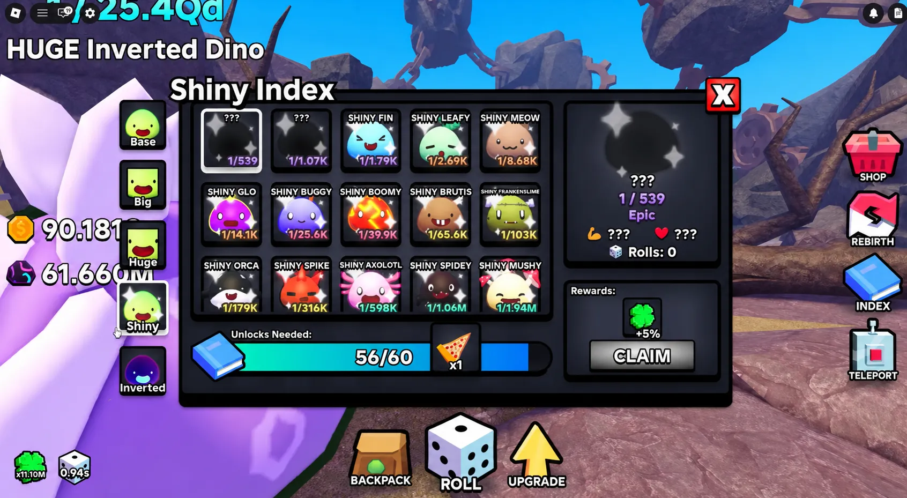
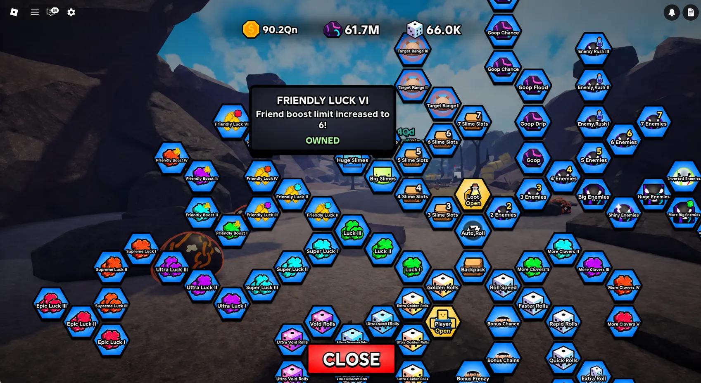
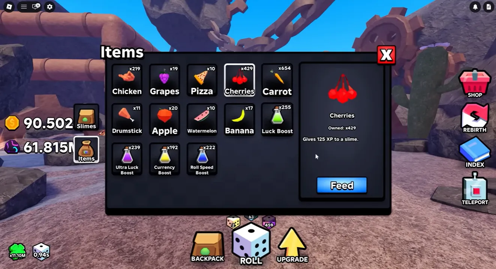
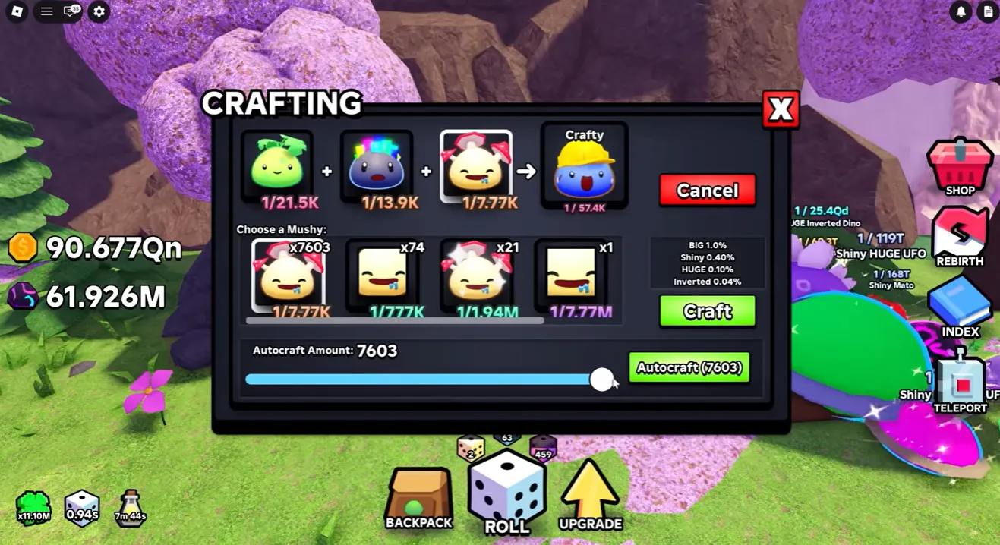

💎 BEST PRO Tips to Get The
Rarest Slimes in Slime RNG (2026)

Rolling rare slimes in Slime RNG isn't purely about luck — it's about systematic optimization. Veteran players consistently hit quadrillion-tier rarities by mastering inventory management, multiplicative luck scaling, zone progression math, and post-rebirth momentum. This advanced guide breaks down the exact pro strategies used by leaderboard players, from saving high-value dice for optimal multiplier thresholds to auto-crafting Index completions for permanent 3x luck boosts. Whether you're pushing for your first inverted variant or hunting leaderboard-only drops, these actionable techniques will drastically increase your rare slime acquisition rate.
📑 Table of Contents
- 1. Strategic Dice & Item Inventory Management
- 2. Maximize Friendly Luck with Group Play
- 3. Fast Rebirth Strategy: Goop & Zone Progression
- 4. Feed & Level Slimes for Massive Damage Scaling
- 5. Currency Boost Timing & Post-Rebirth Optimization
- 6. Auto-Craft Everything & Index Multiplier Mastery
- 💡 Pro Insight: Luck Stacking Mindset
- ❓ Frequently Asked Questions
Strategic Dice & Item Inventory Management
The single most common progression mistake in Slime RNG is spamming high-value dice like Jackpot Spins, Big Dice, Shiny Dice, and Huge Dice early in the game. These items carry significant value (often equivalent to ~350 Robux or earned through rare Index rewards and mutated enemy drops), and their effectiveness scales directly with your current luck multiplier.
The Multiplier Threshold Rule
Using a Jackpot Spin at a 10,000 luck multiplier yields marginal returns. Using that exact same spin at 11 million+ luck can trigger 1-in-25-quadrillion rarity drops. The dice didn't change — your luck multiplier did. Pro players treat rare dice as strategic reserves, only deploying them after crossing major luck milestones or during high-yield update events.
Mutated Dice Acquisition
Recent updates introduced mutated enemies that drop mutated variants of premium dice. These drops are exceptionally rare, making them even more valuable than standard premium dice. Farm mutated enemies strategically, but never rush to open them. Save until your base luck multiplier justifies the investment.
Pro Inventory Rule: Only deploy Jackpot Spins, Big/Shiny/Huge Dice when your luck multiplier exceeds 10M+. Track your inventory and set personal milestones (e.g., "First Jackpot at 15M luck") to prevent impulse usage.

Figure 1: Premium dice effectiveness scales with your luck multiplier. Save them for 10M+ thresholds to maximize rarity potential.
Maximize Friendly Luck with Group Play
Solo play leaves massive luck potential untapped. The Friendly Luck upgrade system provides multiplicative bonuses when playing with others, often jumping your luck multiplier from 11M to 18M+ with a fully optimized group. This isn't a minor bonus — it's a foundational requirement for consistent rare slime acquisition.
Optimal Server Composition
Friendly Luck scales with active players in your server. The maximum bonus requires 6 additional players (7 total including you). While you don't need a full public server, creating a VIP group with dedicated farming partners guarantees consistent bonus activation without relying on random matchmaking.
Upgrade Priority for Social Play
Before investing in standard luck upgrades, fully max out the Friendly Luck tree. The ROI is exceptional: social luck bonuses compound with base multipliers, equipment bonuses, and Index rewards. Players who ignore this system effectively cap their luck at 50-60% of its potential ceiling.
Coordination Strategy
Establish a farming schedule with your group. Consistent session times ensure you're always benefiting from maxed Friendly Luck. Pro players maintain dedicated Discord groups for server hopping, rebirth synchronization, and rare drop coordination.
Common Mistake: Relying on random public servers for Friendly Luck bonuses. Population fluctuates wildly, causing inconsistent multiplier scaling. Build a core group of 4-6 active players for reliable optimization.

Figure 2: Fully maxed Friendly Luck with 6+ players can boost your multiplier by 50-70%, dramatically increasing rare slime odds.
Fast Rebirth Strategy: Goop & Zone Progression
Rebirthing is the primary engine for luck accumulation, but inefficient progression wastes hours of grinding. Speed-running to the farthest accessible zone before resetting is the fastest path to massive Goop gains, which directly fuels your rebirth cycle.
Zone-Based Goop Generation
Goop rewards scale exponentially with zone depth. Reaching the Steampunk zone yields thousands of Goop per kill, while early zones like Grasslands provide fractions of a single unit. Distance = Goop = Rebirths = Luck. This linear progression dictates your upgrade priorities.
Upgrade Allocation Framework
Prioritize these upgrades for maximum zone progression speed:
1. Enemy Track Unlocks: Required to access deeper zones
2. Coin Upgrades: Funds faster equipment and track purchases
3. More Enemies Spawn: Increases kill volume per minute
Delay: Offline Loot and Overkill upgrades early on — they don't accelerate zone progression.
Rebirth Timing Logic
Rebirth when you've maxed out your current zone's Goop efficiency. Don't reset prematurely just because the button is available. Calculate: if pushing one zone deeper doubles your Goop/min, farm it first. Consistent zone progression outperforms frequent, low-yield resets.
Progression Tip: Focus on damage output and coin generation to reach Steampunk faster. High-Goop zones accelerate rebirth cycles, which directly compounds your permanent luck multiplier.
Feed & Level Slimes for Massive Damage Scaling
Slime damage isn't just for combat aesthetics — it's your primary bottleneck for zone progression. Higher zones feature enemies with exponentially increased HP. Without scaled damage, you'll stall in mid-tier areas, severely limiting Goop and coin generation.
Food Item Utilization
Food items like chickens and cherries are dropped through regular gameplay and act as slime experience catalysts. Feeding a slime can multiply its base damage by up to 10x. A standard slime dealing 150k damage can easily reach 1.1M+ with proper leveling, directly impacting zone clearance speed.
Team Composition Optimization
Pro players maintain teams where nearly every slime approaches 1M damage. This isn't achieved through random rolling alone — it's a deliberate investment of food items into your highest-potential slimes. Prioritize leveling your core damage dealers before distributing resources to newer, untested rolls.
The Zone Damage Threshold
Each zone has a minimum viable damage output. If your team can't clear enemies within 3-5 seconds, you're operating below the efficiency threshold. Feed items strategically to bridge this gap, unlock deeper zones, and accelerate your Goop accumulation for faster rebirths.
Common Mistake: Hoarding food items for "later." Food doesn't expire, but delayed damage scaling directly delays zone progression, Goop generation, and rebirth cycles. Level your best slimes immediately.

Figure 3: Feeding slimes food items can multiply base damage by up to 10x, enabling faster clearance of high-HP late-game zones.
Currency Boost Timing & Post-Rebirth Optimization
Timing your Currency Boost potions incorrectly can waste dozens of minutes per rebirth cycle. Since zones reset to Grasslands after every rebirth, your early progression speed dictates how quickly you return to high-yield farming zones.
The Immediate Activation Strategy
Activate Currency Boost potions the second you complete a rebirth. The 2x coin multiplier applied to early zones accelerates equipment purchases, track unlocks, and damage upgrades, drastically reducing the time spent in low-Goop areas. Waiting until you reach mid-tier zones wastes the potion's maximum potential impact.
Opportunity Cost of Delayed Boosts
Every minute stuck in Grasslands or early forests is a minute not generating high-tier Goop or rolling with your current multiplier. By front-loading coin boosts, you compress your post-rebirth progression window, returning to optimal farming zones 30-50% faster than unoptimized players.
Stacking for Maximum Momentum
Combine Currency Boost with Ultra Luck and Roll Speed potions immediately post-rebirth. This triple-stack creates a temporary but highly efficient grinding window, allowing you to rapidly rebuild your team, secure Index progress, and reach Steampunk before your multipliers expire.
Timing Rule: Currency Boost lasts 3 minutes. Use it immediately after rebirthing to speedrun early zones. Hoarding it for "later" wastes its highest-value progression window.
Auto-Craft Everything & Index Multiplier Mastery
The Index system is your permanent luck multiplier engine, and Auto-Craft is the fastest way to complete it. Many players overlook this system, but mastering it can triple your effective luck multiplier through guaranteed progression rather than pure RNG.
Auto-Craft as Passive Index Completion
Set Auto-Craft to run continuously for all available craftable slime variants. Even low-probability variants (e.g., 1-in-2,500 Inverted types) become guaranteed through volume. Crafting 7,000+ units ensures near-100% completion rates for missing variants.
Index Multiplier Compounding
Each completed Index slot grants permanent luck multipliers. Completing craftable families alone can push your multiplier from 11M to 33M+ through stacked rewards. This isn't a minor bonus — it's a 3x luck increase achieved purely through systematic crafting.
Variant Hunting Priority
- Identify missing variants: Check Index for incomplete craftable lines (Normal → Big → Huge → Shiny → Inverted)
- Set Auto-Craft for targets: Prioritize missing high-tier variants first
- Claim Index rewards immediately: Multipliers compound instantly upon claiming
- Reinvest luck gains: Higher luck improves rare roll rates, accelerating further Index completion

Figure 4: Continuous auto-crafting fills Index slots rapidly, unlocking permanent 3x+ luck multipliers without relying on random drops.
💡 Pro Insight: Luck Stacking Mindset
Consistent rare slime acquisition isn't about one perfect strategy — it's about systematic layering. Save premium dice until your multiplier hits 10M+, max Friendly Luck with a 6-player group, prioritize zone progression for Goop, feed slimes to overcome damage thresholds, trigger Currency Boost immediately post-rebirth, and run Auto-Craft continuously for Index multipliers. Each system compounds the next. Players who ignore one bottleneck cap their entire progression chain. Optimize holistically, track your multipliers, and let the math work in your favor. Rare slimes aren't luck — they're engineered.